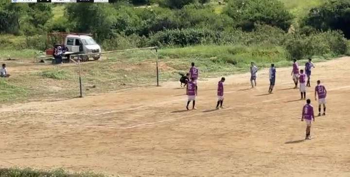

EN VIVO DESDE TU CANCHAQuilpué · Villa Alemana
Cómo funciona
Agenda en 3 pasos
- 1Llena el formularioNos cuentas el club, la fecha, la hora, la cancha y cuántos partidos son.
- 2Te escribimos por WhatsAppConfirmamos la disponibilidad y el valor.
- 3¡A relatar!Llegamos a la cancha, transmitimos en vivo y después te mandamos los reels.